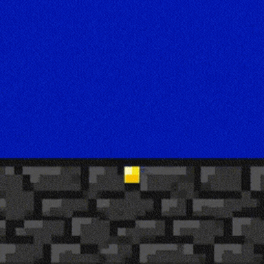

PROTOTYPE PHASE
Practice check • redo allowed
Practice GIF: Post in the Discussion
Build one small, readable motion in Piskel. Save the editable source, export a GIF, and post it below.
✏️
Quick Steps
- Draw 3 to 5 unique poses for one small motion.
- Duplicate or hold poses until the loop has 12 to 24 displayed frames at 12 fps.
- Preview the loop. Fix one jump, pause, or unclear pose.
- Download
Last-First-Practice.piskeland move it to your class storage location. - Export a repeating GIF, post it below, and check that it plays.
Exit ticket: Leave two peer replies using these stems:
- I like how __________ because __________.
- I wonder if you could __________ to __________.
Example: I noticed the glow becomes brighter one step at a time. I wonder if two duplicated frames at the brightest point would make it easier to see.
Word bank: frame • pose • duplicate • onion skin • loop • timing • source file
Word bank: frame • pose • duplicate • onion skin • loop • timing • source file
⬇️
Post your GIF in the discussion below
No special filename needed.
⚙️ Export at 12 FPS (Loop ON)
🎥
Try this 3-frame arm-raise demo
Example 

- Use onion skin to line up poses.
- Duplicate frames to hold a pose long enough to read.
- Keep one motion simple, readable, and high contrast.
✅ Goal: one smooth motion
💬 Leave 2 peer comments
🕒 Done this period